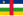

Developing country
{kind=link}
The latest classifications sorted by the IMF[1] and the UN[2]
.svg){kind=link}
- Very high
- High
- Medium
- Low
- No data
A developing country is a sovereign state with a less developed industrial base and a lower Human Development Index (HDI) relative to other countries.[3] However, this definition is not universally agreed upon. There is also no clear agreement on which countries fit this category.[4][5] The terms low and middle-income country (LMIC) and newly emerging economy (NEE) are often used interchangeably but refers only to the economy of the countries. The World Bank classifies the world's economies into four groups, based on gross national income per capita: high, upper-middle, lower-middle, and low income countries. Least developed countries, landlocked developing countries and small island developing states are all sub-groupings of developing countries. Countries on the other end of the spectrum are usually referred to as high-income countries or developed countries.
There are controversies over the term's use, as some feel that it perpetuates an outdated concept of "us" and "them".[6] In 2015, the World Bank declared that the "developing/developed world categorization" had become less relevant and that they will phase out the use of that descriptor. Instead, their reports will present data aggregations for regions and income groups.[5][7] The term "Global South" is used by some as an alternative term to developing countries.
Developing countries tend to have some characteristics in common often due to their histories or geographies. For example, they commonly have: lower levels of access to safe drinking water, sanitation and hygiene, energy poverty, higher levels of pollution (e.g. air pollution, littering, water pollution, open defecation), higher proportions of people with tropical and infectious diseases (neglected tropical diseases), more road traffic accidents, and generally poorer quality infrastructure.
In addition, there are also often high unemployment rates, widespread poverty, widespread hunger, extreme poverty, child labour, malnutrition, homelessness, substance abuse, prostitution, overpopulation, civil disorder, human capital flight, a large informal economy, high crime rates (extortion, robbery, burglary, murder, homicide, arms trafficking, sex trafficking, drug trafficking, kidnapping, rape), low education levels, economic inequality, school desertion, inadequate access to family planning services, teenage pregnancy, many informal settlements and slums, corruption at all government levels, and political instability. Unlike developed countries, developing countries lack rule of law.
Access to healthcare is often low.[8] People in developing countries usually have lower life expectancies than people in developed countries, reflecting both lower income levels and poorer public health.[9][10][11] The burden of infectious diseases,[12] maternal mortality,[13][14] child mortality[15] and infant mortality[16][17] are typically substantially higher in those countries. The effects of climate change are expected to impact developing countries more than high-income countries, as most of them have a high climate vulnerability or low climate resilience.[18]
Developing countries often have lower median ages than developed countries. Population aging is a global phenomenon, but population age has risen more slowly in developing countries.[19]
Development aid or development cooperation is financial aid given by foreign governments and other agencies to support developing countries' economic, environmental, social, and political development. If the Sustainable Development Goals which were set up by the United Nations for the year 2030 are achieved, they would overcome many of these problems.
Terms used to classify countries
[edit]There are several terms used to classify countries into rough levels of development. Classification of any given country differs across sources, and sometimes, these classifications or the specific terminology used is considered disparaging.
By income groups
[edit]{kind=link}
The World Bank classifies the world's economies into four groups, based on gross national income per capita calculated using the Atlas method, re-set each year on 1 July:[20]
- low-income countries
- lower-middle income countries
- upper-middle income countries
- high income countries (similar to developed countries)
The three groups that are not "high income" are together referred to as "low and middle income countries" (LMICs). For example, for the 2022 fiscal year, a low income country is defined as one with a GNI per capita less than 1,045 in current US$; a lower middle-income country is one with GNI per capita between 1,046 and 4,095 in current US$; an upper middle-income country is one with GNI per capita between 4,096 and 12,695 in current US$, and a high income country is one with GNI per capita of more than 12,696 in current US$.[21] Historical thresholds are documented.
By markets and economic growth
[edit]The use of the term "market" instead of "country" usually indicates a specific focus on the characteristics of the countries' capital markets as opposed to the overall economy.
- Developed countries and developed markets
- Developing countries include in decreasing order of economic growth or size of the capital market:
- Newly industrialized countries[22][23][24][25]
- Emerging markets
- Frontier markets
- Least developed countries (also called less economically developed country)
Under other criteria, some countries are at an intermediate stage of development, or, as the International Monetary Fund (IMF) put it, following the fall of the Soviet Union, "countries in transition": all those of Central and Eastern Europe (including Central European countries that still belonged to the "Eastern Europe Group" in the UN institutions); the former Soviet Union (USSR) countries in Central Asia (Kazakhstan, Uzbekistan, Kyrgyzstan, Tajikistan and Turkmenistan); and Mongolia. By 2009, the IMF's World Economic Outlook classified countries as advanced, emerging, or developing, depending on "(1) per capita income level, (2) export diversification—so oil exporters that have high per capita GDP would not make the advanced classification because around 70% of its exports are oil, and (3) degree of integration into the global financial system".[26]
By geography
[edit]Developing countries can also be categorized by geography:
- Small Island Developing States (a group of developing countries that are small island countries which tend to share similar sustainable development challenges: small but growing populations, limited resources, remoteness, susceptibility to natural disasters, vulnerability to external shocks, excessive dependence on international trade, and fragile environments).
- Landlocked Developing Countries (landlocked countries often experience economic and other disadvantages)
By other parameters
[edit]- Heavily indebted poor countries, a definition by a program of the IMF and World Bank
- Transition economy, moving from a centrally planned to market-driven economy
- Multi-dimensional clustering system: with the understanding that different countries have different development priorities and levels of access to resources and institutional capacities[27] and to offer a more nuanced understanding of developing countries and their characteristics, scholars have categorized them into five distinct groups based on factors such as levels of poverty and inequality, productivity and innovation, political constraints and dependence on external flows.[28][29]
By self declaration
[edit]In general, the WTO accepts any country's claim of itself being "developing". Certain countries that have become "developed" in the last 20 years by almost all economic metrics, still insist to be classified as "developing country", as it entitles them to a preferential treatment at the WTO, countries such as Brunei, Hong Kong, Kuwait, Macao, Qatar, Singapore, and the United Arab Emirates have been cited and criticized for this self-declared status.[30]
Measure and concept of development
[edit]{kind=link}
[when?][citation needed]
_per_capita_in_2024.svg){kind=link}
- >$60,000
- $50,000 – $60,000
- $40,000 – $50,000
- $30,000 – $40,000
- $20,000 – $30,000
- $10,000 – $20,000
- $5,000 – $10,000
- $2,500 – $5,000
- $1,000 – $2,500
- <$1,000
- No data
Development can be measured by economic or human factors. Developing countries are, in general, countries that have not achieved a significant degree of industrialization relative to their populations, and have, in most cases, a medium to low standard of living. There is an association between low income and high population growth.[31] The development of a country is measured with statistical indices such as income per capita (per person), gross domestic product per capita, life expectancy, the rate of literacy, freedom index and others. The UN has developed the Human Development Index (HDI), a compound indicator of some of the above statistics, to gauge the level of human development for countries where data is available. The UN had set Millennium Development Goals from a blueprint developed by all of the world's countries and leading development institutions, in order to evaluate growth.[32] These goals ended in 2015, to be superseded by the Sustainable Development Goals.
The concept of the developing nation is found, under one term or another, in numerous theoretical systems having diverse orientations – for example, theories of decolonization, liberation theology, Marxism, anti-imperialism, modernization, social change and political economy.
Another important indicator is the sectoral changes that have occurred since the stage of development of the country. On an average, countries with a 50% contribution from the secondary sector (manufacturing) have grown substantially. Similarly, countries with a tertiary sector stronghold also see a greater rate of economic development.
Associated theories
[edit]The term "developing countries" has many research theories associated with it (in chronological order):
- Modernization theory – to explain the process of modernization within societies
- Dependency theory – the notion that resources flow from a "periphery" of poor and underdeveloped states to a "core" of wealthy states, enriching the latter at the expense of the former
- Development theory – a collection of theories about how desirable change in society is best achieved.
- Postdevelopment theory – holds that the whole concept and practice of development is a reflection of Western-Northern hegemony over the rest of the world
Criticisms of the term
[edit]There is criticism for using the term "developing country". The term could imply inferiority of this kind of country compared with a developed country.[33] It could assume a desire to develop along the traditional Western model of economic development which a few countries, such as Cuba and Bhutan, choose not to follow.[clarification needed][34] Alternative measurements such as gross national happiness have been suggested as important indicators.
One of the early criticisms that questioned the use of the terms "developing" and "underdeveloped" countries was voiced in 1973 by prominent historian and academic Walter Rodney who compared the economic, social, and political parameters between the United States and countries in Africa and Asia.[35][clarification needed]
There is "no established convention" for defining "developing country".[36] According to economist Jeffrey Sachs, the current divide between the developed and developing world is largely a phenomenon of the 20th century.[37][page needed] The late global health expert Hans Rosling has argued against the terms, calling the concept "outdated" since the terms are used under the prerequisite that the world is divided in rich and poor countries, while the fact is that the vast majority of countries are middle-income.[6] Given the lack of a clear definition, sustainability expert Mathis Wackernagel and founder of Global Footprint Network, emphasizes that the binary labeling of countries is "neither descriptive nor explanatory".[38] Wackernagel identifies these binary terms of "developing" vs. "developed" countries, or "North" vs. "South", as "a thoughtless and destructive endorsement of GDP fetish."[38] Wackernagel and Rosling both argue that in reality, there are not two types of countries, but over 200 countries, all faced with the same laws of nature, yet each with unique features.[38][6]
The term "developing" refers to a current situation and not a changing dynamic or expected direction of development. Additionally, the term "developing world" is increasingly seen as outdated, suggesting a hierarchy and not accurately reflecting the diverse realities of the encompassed countries. This term includes 135 low- or middle-income countries, covering 84% of the global population, and is criticized for its imprecision. Historical and empirical evidence, like the varied infant mortality rates across these nations, underscores the flaws in a uniform classification. Alternatives such as regional or income-based categories (low-income to high-income) are advocated for, as they align better with the specific contexts of countries, supporting more effective policy formulation.[39]
Since the late 1990s, countries identified by the UN as developing countries tended to demonstrate higher growth rates than those in the developed countries category.[40]
To moderate the euphemistic aspect of the word "developing", international organizations have started to use the term less economically developed country for the poorest nations – which can, in no sense, be regarded as developing. This highlights that the standard of living across the entire developing world varies greatly.
In 2015, the World Bank declared that the "developing / developed world categorization" had become less relevant, due to worldwide improvements in indices such as child mortality rates, fertility rates and extreme poverty rates.[5] In the 2016 edition of its World Development Indicators (WDI), the World Bank made a decision to no longer distinguish between "developed" and "developing" countries in the presentation of its data, considering the two-category distinction outdated.[7] Accordingly, World Bank is phasing out use of that descriptor. Instead, the reports by Worldbank (such as the WDI and the Global Monitoring Report) now include data aggregations for the whole world, for regions, and for income groups – but not for the "developing world".[5][7]
Related terms
[edit]The term low and middle-income country (LMIC) is often used interchangeably with "developing country" but refers only to the economy of the countries. Least developed countries, landlocked developing countries and small island developing states are all sub-groupings of developing countries. Countries on the other end of the spectrum are usually referred to as high-income countries or developed countries.
Global South
[edit]The term "Global South" began to be used more widely since about 2004.[41][42] It can also include poorer "southern" regions of wealthy "northern" countries.[43] The Global South refers to these countries' "interconnected histories of colonialism, neo-imperialism, and differential economic and social change through which large inequalities in living standards, life expectancy, and access to resources are maintained".[44]
{kind=link}
Global North and Global South are terms that denote a method of grouping countries based on their defining characteristics with regard to socioeconomics and politics. According to UN Trade and Development (UNCTAD), the Global South broadly comprises Africa, Latin America and the Caribbean, Asia (excluding Israel, Japan, and South Korea), and Oceania (excluding Australia and New Zealand).[45][47][a] Most of the Global South's countries are commonly identified as lacking in their standard of living, which includes having lower incomes, high levels of poverty, high population growth rates, inadequate housing, limited educational opportunities, and deficient health systems, among other issues.[b] Additionally, these countries' cities are characterized by their poor infrastructure.[c] Opposite to the Global South is the Global North, which the UNCTAD describes as broadly comprising Northern America and Europe, Israel, Japan, South Korea, Australia, and New Zealand.[45][47][a] As such, the two terms do not refer to the Northern Hemisphere or the Southern Hemisphere, as many of the Global South's countries are geographically located in the former and, similarly, a number of the Global North's countries are geographically located in the latter.[48]
More specifically, the Global North consists of the world's developed countries, whereas the Global South consists of the world's developing countries and least developed countries.[47][49] The Global South classification, as used by governmental and developmental organizations, was first introduced as a more open and value-free alternative to “Third World”,[50] and likewise potentially “valuing” terms such as developed and developing. Countries of the Global South have also been described as being newly industrialized or in the process of industrializing, many of them are current or former subjects of colonialism.[51]Third World
[edit]
Common characteristics
[edit]Government, politics and administration
[edit]Many developing countries have only attained full self-determination and democracy after the second half of the 20th century. Many were governed by an imperial European power until decolonization. Political systems in developing countries are diverse, but most states had established some form of democratic governments by the early 21st century, with varying degrees of success and political liberty.[54] The inhabitants of developing countries were introduced to democratic systems later and more abruptly than their Northern counterparts and were sometimes targeted by governmental and non-governmental efforts to encourage participation. 'Effective citizenship' is defined by sociologist Patrick Heller as: "closing [the] gap between formal legal rights in the civil and political arena, and the actual capability to meaningfully practice those rights".[55]
Beyond citizenship, the study of the politics of cross-border mobility in developing countries has also shed valuable light in migration debates, seen as a corrective to the traditional focus on developed countries.[56] Some political scientists identify a 'typology of nationalizing, developmental, and neoliberal migration management regimes' across developing countries.[57]
Economy
[edit],_2018.jpg){kind=link}
Following independence and decolonization in the 20th century, most developing countries had dire need of new infrastructure, industry and economic stimulation. Many relied on foreign investment. This funding focused on improving infrastructure and industry, but led to a system of systemic exploitation.[citation needed] They exported raw materials, such as rubber, for a bargain. Companies based in the Western world have often used the cheaper labor in developing countries for production.[58] The West benefited significantly from this system, but left developing countries undeveloped.
This arrangement is sometimes called neocolonialism, meaning a system in which less-developed countries are taken advantage of by developed countries. It does not necessarily mean that former colonies are still controlled by their former colonizer; it refers to colonial-like exploitation. Developing countries are often helping further develop rich countries, rather than being developed themselves.[59] Several institutions have been established with the goal of putting an end to this system.[60] One of these institutions is the New International Economic Order. They have a 'no-strings-attached' policy that promotes developing countries remaining or becoming self-sufficient. More specifically, they advocate sovereignty over natural resources and industrialization.
Coalitions of developing nations, like the NIEO, frequently lobby for parity in the world stage. The rise of China might imply the rise of the BRIC countries.[58]
Common challenges
[edit]| Development economics |
|---|
| Economies by region |
| Economic growth theories |
| Fields and subfields |
| Lists |
{kind=link}
The global issues most often discussed by developing countries include globalisation, global health governance, health, and prevention needs. This is contrasted by issues developed nations tend to address, such as innovations in science and technology.[61]
Most developing countries have these criteria in common:[62][63]
- High levels of poverty – measured based on GNI per capita averaged over three years. For example, if the GNI per capita is less than US$1,025 (as of 2018) the country is regarded as a least developed country.[63]
- Human resource weakness (based on indicators of nutrition, health, education and adult literacy).
- Economic vulnerability (based on instability of agricultural production, instability of exports of goods and services, economic importance of non-traditional activities, merchandise export concentration, handicap of economic smallness, and the percentage of population displaced by natural disasters). Among other challenges, developing countries have a higher risk of suffering a balance of payments crisis.[64]
Urban slums
[edit]According to UN-Habitat, around 33% of the urban population in the developing world in 2012, or about 863 million people, lived in slums.[65] In 2012, the proportion of urban population living in slums was highest in Sub-Saharan Africa (62%), followed by South Asia (35%), Southeast Asia (31%) and East Asia (28%).[65]: 127
The UN-Habitat reports that 43% of urban population in developing countries and 78% of those in the least developed countries live in slums.[66]
Slums form and grow in different parts of the world for many reasons. Causes include rapid rural-to-urban migration, economic stagnation and depression, high unemployment, poverty, informal economy, forced or manipulated ghettoization, poor planning, politics, natural disasters and social conflicts.[67][68][69] For example, as populations expand in poorer countries, rural people move to cities in extensive urban migration that results in the creation of slums.[70]
In some cities, especially in countries in Southern Asia and Sub-Saharan Africa, slums are not just marginalized neighborhoods holding a small population; slums are widespread, and are home to a large part of urban population. These are sometimes called "slum cities".[71]
Violence against women
[edit]{kind=link}
Several forms of violence against women are more prevalent in developing countries than in other parts of the world. Acid throwing is associated with Southeast Asia, including Cambodia. Honor killing is associated with the Middle East and the Indian Subcontinent. Marriage by abduction is found in Ethiopia, Central Asia and the Caucasus. Abuse related to payment of bride price (such as violence, trafficking and forced marriage) is linked to parts of Sub-Saharan Africa and Oceania.[72][73]
Female genital mutilation (FGM) is another form of violence against women which is still occurring in many developing countries. It is found mostly in Africa, and to a lesser extent in the Middle East and some other parts of Asia. Developing countries with the highest rate of women who have been cut are Somalia (with 98% of women affected), Guinea (96%), Djibouti (93%), Egypt (91%), Eritrea (89%), Mali (89%), Sierra Leone (88%), Sudan (88%), Gambia (76%), Burkina Faso (76%), and Ethiopia (74%).[74] Due to globalization and immigration, FGM is spreading beyond the borders of Africa, Asia and the Middle East, and to countries such as Australia, Belgium, Canada, France, New Zealand, the U.S., and UK.[75]
The Istanbul Convention prohibits female genital mutilation (Article 38).[76] As of 2016, FGM has been legally banned in many African countries.[77]
{kind=link}
According to UN Women facts and figures on ending violence against women,[78] it is estimated that 35 percent of women worldwide have experienced either physical and sexual violence by intimate partners or sexual violence by a non-partner (not including sexual harassment) at some point in their lives. Evidence shows women who have had experienced physical or sexual intimate partner violence report higher rates of depression, having an abortion and acquiring HIV, compared to women who have not had experienced any physical or sexual violence.[78]
Data from the Middle East and North Africa shows that men who witnessed their fathers against their mothers, and men who experienced some form of violence as children, more likely have reported perpetrating intimate partner violence in their adult relationships.[78]
Healthcare and public health
[edit]The status of healthcare that the general public can access is substantially different between developing countries and developed countries.[8] People in developing countries usually have a lower life expectancy than people in developed countries, reflecting both lower income levels and poorer public health.[9][10][11] The burden of infectious diseases,[12] maternal mortality,[13][14] child mortality[15] and infant mortality[16][17] are typically substantially higher in those countries. Developing countries also have less access to medical health services generally,[79] and are less likely to have the resources to purchase, produce and administer vaccines, even though vaccine equity worldwide is important to combatting pandemics, such as the COVID-19 pandemic.[80]
{kind=link}
Undernutrition is more common in developing countries.[81] Certain groups have higher rates of undernutrition, including women – in particular while pregnant or breastfeeding – children under five years of age, and the elderly. Malnutrition in children and stunted growth of children is the cause for more than 200 million children under five years of age in developing countries not reaching their developmental potential.[82] About 165 million children were estimated to have stunted growth from malnutrition in 2013.[83] In some developing countries, overnutrition in the form of obesity is beginning to present within the same communities as undernutrition.[84]
The following list shows the further significant environmentally-related causes or conditions, as well as certain diseases with a strong environmental component:[85]
- Illness/disease (malaria, tuberculosis, AIDS, etc.): Illness imposes high and regressive cost burdens on families in developing countries.[86]
- Tropical and infectious diseases (neglected tropical diseases)
- Unsafe drinking water, poor sanitation and hygiene
- Indoor air pollution in developing nations
- Pollution (e.g. air pollution, water pollution)
- Motor vehicle collisions
- Unintentional poisoning
- Non communicable diseases and weak healthcare systems
Water, sanitation, hygiene (WASH)
[edit]Access to water, sanitation and hygiene (WASH) services is at very low levels in many developing countries. In 2015 the World Health Organization (WHO) estimated that "1 in 3 people, or 2.4 billion, are still without sanitation facilities" while 663 million people still lack access to safe and clean drinking water.[87][88] The estimate in 2017 by JMP states that 4.5 billion people currently do not have safely managed sanitation.[89] The majority of these people live in developing countries.
About 892 million people or 12 percent of the global population, practiced open defecation instead of using toilets in 2016.[89] Seventy-six percent (678 million) of the 892 million people practicing open defecation in the world live in just seven countries.[89] Countries with a high number of people openly defecating are India (348 million), followed by Nigeria (38.1 million), Indonesia (26.4 million), Ethiopia (23.1 million), Pakistan (19.7 million), Niger (14.6 million) and Sudan (9.7 million).[90]
Sustainable Development Goal 6 is one of 17 Sustainable Development Goals established by the UN in 2015. It calls for clean water and sanitation for all people. This is particularly relevant for people in developing countries.
Energy
[edit]{kind=link}
In 2009, about 1.4 billion of people in the world lived without electricity. 2.7 billion relied on wood, charcoal, and dung (dry animal dung fuel) for home energy requirements. This lack of access to modern energy technology limits income generation, blunts efforts to escape poverty, affects people's health due to indoor air pollution, and contributes to global deforestation and climate change. Small-scale renewable energy technologies and distributed energy options, such as onsite solar power and improved cookstoves, offer rural households modern energy services.[91]
Renewable energy can be particularly suitable for developing countries. In rural and remote areas, transmission and distribution of energy generated from fossil fuels can be difficult and expensive. Producing renewable energy locally can offer a viable alternative.[92]
Renewable energy can directly contribute to poverty alleviation by providing the energy needed for creating businesses and employment. Renewable energy technologies can also make indirect contributions to alleviating poverty by providing energy for cooking, space heating, and lighting.[93]
Kenya is the world leader in the number of solar power systems installed per capita.[94]
Pollution
[edit]Water pollution
[edit]{kind=link}
{kind=link}
Water pollution is a major problem in many developing countries. It requires ongoing evaluation and revision of water resource policy at all levels (international down to individual aquifers and wells). It has been suggested that water pollution is the leading worldwide cause of death and diseases,[95][96] and that it accounts for the deaths of more than 14,000 people daily.[96]
India and China are two countries with high levels of water pollution: An estimated 580 people in India die of water pollution related illness (including waterborne diseases) every day.[97] About 90 percent of the water in the cities of China is polluted.[98] As of 2007, half a billion Chinese had no access to safe drinking water.[99]
However, after a series of reforms, China's environment began to demonstrate enormous improvements around the 2010s. Under the leadership of CCP general secretary Xi Jinping, a sizable fraction of high-pollution industries have been gradually phased out and many illegally polluting factories were sanctioned or closed. A considerable amount of effort went to enforce environmental regulations at regional levels and holding persons of malpractice accountable, including officials and firm managers. The slogan "clear waters and green mountains are as valuable as gold and silver mountains" proposed by Chinese leader Xi Jinping in 2005[100] signifies China's determination in amending environmental burdens created during industrialization while shifting to more sustainable modes of development and adopting high-end industries. Water bodies around the country are much cleaner than a decade ago and steadily approaching natural levels in pollutants.
In 2021, China introduced the "coal to gas" policy[101] as one of many policies directed towards achieving peak carbon emissions in 2060. Coal combustion in homes, power stations and production industries constitutes 60% of total energy consumption in China and is the main source of water and air pollution. It is speculated that pollution sources will be progressively eliminated as China reaches the upper tiers of developing countries.
Further details of water pollution in several countries, including many developing countries:
Indoor air pollution
[edit]Indoor air pollution in developing nations is a major health hazard.[102] A major source of indoor air pollution in developing countries is the burning of biomass. Three billion people in developing countries across the globe rely on biomass in the form of wood, charcoal, dung, and crop residue, as their domestic cooking fuel.[103] Because much of the cooking is carried out indoors in environments that lack proper ventilation, millions of people, primarily poor women and children face serious health risks.
Globally, 4.3 million deaths were attributed to exposure to IAP in developing countries in 2012, almost all in low and middle income countries. The South East Asian and Western Pacific regions bear most of the burden with 1.69 and 1.62 million deaths, respectively. Almost 600,000 deaths occur in Africa.[104] An earlier estimate from 2000 put the death toll between 1.5 million and 2 million deaths.[105]
Finding an affordable solution to address the many effects of indoor air pollution is complex. Strategies include improving combustion, reducing smoke exposure, improving safety and reducing labor, reducing fuel costs, and addressing sustainability.[106]
Climate change
[edit]Particular vulnerability to climate change
[edit]{kind=link}
The Intergovernmental Panel on Climate Change (IPCC) has confirmed that warming of the climate system due to human intervention is 'unequivocal'.[108] The effects of climate change will be felt around the globe and will result in events such as extreme weather events, droughts, floods, biodiversity loss, disease and sea level rise, which are dangerous for societies and the environment.[109]
Although 79% of carbon emissions are produced by developed countries,[110] and developing countries have not been the major cause of climate change,[108] they are the most at risk from the effects of these changes and may face challenges in adapting to climate change due to the intersecting issues of high climate vulnerability, low economic status,[111] restricted access to technology, failing infrastructure and limited access to financial resources. Where a country is particularly vulnerable to climate change they are called "highly climate vulnerable"[citation needed]. This applies to many countries in Sub-Saharan Africa, fragile states or failed states like Afghanistan, Haiti, Myanmar, and Somalia, as well as to Small Island Developing States[citation needed]. In the cases where developing countries produce only small quantities of greenhouse gas emissions per capita but are very vulnerable to the negative effects of global warming, the term "forced riders" as opposed to the "free riders" has been used as a descriptor.[18][112] Such countries include Comoros, The Gambia, Guinea-Bissau, São Tomé and Príncipe, Solomon Islands and Vanuatu.[112]
Climate vulnerability has been quantified in the Climate Vulnerability Monitor reports of 2010 and 2012. Climate vulnerability in developing countries occurs in four impact areas: health, extreme weather, habitat loss, and economic stress.[109][18] A report by the Climate Vulnerability Monitor in 2012 estimated that climate change causes 400,000 deaths on average each year, mainly due to hunger and communicable diseases in developing countries.[113]: 17 These effects are most severe for the world's poorest countries. Internationally there is recognition of the mismatch between those that have caused climate change and those which will suffer the most from climate change, termed "climate justice". It has been a topic for discussion at some of the United Nations Climate Change Conferences (COP).
"When we think about livelihoods at risk from climate change impacts, we know that people living in developing countries, and especially the least-developed countries and small island states, often have the least financial resources to adapt," says Nancy Saich, the European Investment Bank's chief climate change expert.[114]
Impacts
[edit]A changing climate also results in economic burdens. The economies in Least Developed Countries have lost an average of 7% of their gross domestic product for the year 2010, mainly due to reduced labor productivity.[113]: 14 Rising sea levels cost 1% of GDP to the least developed countries in 2010 – 4% in the Pacific – with 65 billion dollars annually lost from the world economy.[109] Another example is the impact on fisheries: approximately 40 countries are acutely vulnerable to the impact of greenhouse gas emissions on fisheries. Developing countries with large fisheries sectors are particularly affected.[113]: 279 During the Cancún COP16 in 2010, donor countries promised an annual $100 billion by 2020 through the Green Climate Fund for developing countries to adapt to climate change. However, concrete pledges by developed countries have not been forthcoming.[115][116] Emmanuel Macron (President of France) said at the 2017 United Nations Climate Change Conference in Bonn (COP 23): "Climate change adds further injustice to an already unfair world".[117] Economic development and climate are inextricably linked, particularly around poverty, gender equality, and energy.[118]
Tackling climate change will only be possible if the Sustainable Development Goals (SDGs) are met, in particular Sustainable Development Goal 13 on climate action.[118]
Climate stress is likely to add to existing migration patterns in developing countries and beyond but is not expected to generate entirely new flows of people.[119]: 110 A report by the World Bank in 2018 estimated that around 143 million people in three regions (Sub-Saharan Africa, South Asia, and Latin America) could be forced to move within their own countries to escape the slow-onset impacts of climate change. They will migrate from less viable areas with lower water availability and crop productivity and from areas affected by rising sea level and storm surges.[120]
In spite of the cumulative stressors and challenges faced by developing countries in adapting to the effects of climate change, there are those that are world leaders in the field such as Bangladesh. Bangladesh created a national programme in 2009 focused on how the country would adapt to climate change (the first country to do so).[121][122] It established a fund to support these plans, spending on average $1 billion annually in this regard.[123]
Population growth
[edit]{kind=link}
Over the last few decades, global population growth has largely been driven by developing countries, which often have higher birth rates (higher fecundity rate) than developed countries. According to the United Nations, family planning can help to slow population growth and decrease poverty in these countries.[31]
The violent herder–farmer conflicts in Nigeria, the March 2019 attacks against Fulani herders in Mali, the Sudanese nomadic conflicts and other conflicts in the countries of the Sahel region have been exacerbated by climate change, land degradation, and population growth.[124][125][126] Droughts and food shortages have been also linked to the Northern Mali conflict.[127][128]
Poor governance
[edit]Many developing countries are considered flawed democracies or authoritarian regimes by democracy indices such as the V-Dem Democracy indices and Democracy Index (The Economist). Following decolonization and independence, elites have often had oligarchic control of the government.[citation needed]
The establishment of a healthy democratic state has often been challenged by widespread corruption and nepotism and a low confidence and participation in democratic process. Political instability and political corruption are common problems.[129][130] To fully reach the goal of a low level of corruption, developing countries are usually using special steps for different establishments inside their territories, such as:
- Development or creation of a fair public administration system that is not partially based on corruption and is entirely based on the values and laws of the country
- Better investigation towards the sources of the corruption and probable causes of that particular action
- Publicly informing the residents about the source of corruption and negative influence on the country's economy
- Regulation of the official positions of an individual to not be the source of abuse for corruption.
- Creation of special laws dedicated to the corruption itself for specific establishments[131]
Others
[edit]Other common challenges include: Increased and intensified industrial and agricultural production and emission of toxic chemicals directly into the soil, air, and water, unsustainable use of energy resources; high dependency on natural resources for livelihood, leading to unsustainable exploitation or depletion of those resources; child marriage, indebtedness (see Debt of developing countries) and underperforming civil service (see Civil service reform in developing countries), food insecurity, illiteracy and unemployment. The economies of many developing nations are tried to primary products and a majority of their exports go to advanced nations. When advanced nations encounter economic downturns, they can quickly transmit to their developing country trading partners as seen in global economic downturn of 2008–2009.
Opportunities
[edit]- Human Capital
- Trade Policy: Countries with more restrictive policies have not grown as fast as countries with open and less distorted trade policies.[130][132]
- Investment: Investment has a positive effect on growth.[130]
- Education[133]
- Aid for Trade: Included in Sustainable Development Goal 8 under Target 8.a.1 Increase aid for trade is an initiative to help developing countries practice trade and benefit. Aid for trade is to assist developing countries in trade related programmes, prioritize trade and trade capacity, improve trade performance and reduce poverty.[134]
- Global partnership: A provision of Sustainable Development Goal 17 which advocates for international investment and support to achieve innovative technological development, access to market, and fair trade for developing countries.[135]
Country lists
[edit]Emerging and developing economies according to the International Monetary Fund
[edit]The following are considered emerging and developing economies according to the International Monetary Fund's World Economic Outlook Database, April 2023[update].[136]
- Afghanistan
 Albania
Albania Algeria
Algeria Angola
Angola Antigua and Barbuda
Antigua and Barbuda Argentina
Argentina Armenia
Armenia Azerbaijan
Azerbaijan Bahamas
Bahamas Bahrain
Bahrain Bangladesh
Bangladesh Barbados
Barbados Belarus
Belarus Belize
Belize Benin
Benin Bhutan
Bhutan Bolivia
Bolivia Bosnia and Herzegovina
Bosnia and Herzegovina Botswana
Botswana Brazil
Brazil Brunei
Brunei Bulgaria
Bulgaria Burkina Faso
Burkina Faso Burundi
Burundi Cambodia
Cambodia Cameroon
Cameroon Cape Verde
Cape Verde-  Central African Republic
 Chad
Chad China
China Chile
Chile Colombia
Colombia Comoros
Comoros Democratic Republic of the Congo
Democratic Republic of the Congo Republic of the Congo
Republic of the Congo Costa Rica
Costa Rica Djibouti
Djibouti Dominica
Dominica Dominican Republic
Dominican Republic East Timor
East Timor Ecuador
Ecuador Egypt
Egypt El Salvador
El Salvador Equatorial Guinea
Equatorial Guinea Eritrea
Eritrea Eswatini (Swaziland)
Eswatini (Swaziland) Ethiopia
Ethiopia Fiji
Fiji Gabon
Gabon The Gambia
The Gambia Georgia
Georgia Ghana
Ghana Grenada
Grenada Guatemala
Guatemala Guinea
Guinea Guinea-Bissau
Guinea-Bissau Guyana
Guyana Haiti
Haiti Honduras
Honduras Hungary
Hungary India
India Indonesia
Indonesia Iran
Iran Iraq
Iraq Ivory Coast
Ivory Coast Jamaica
Jamaica Jordan
Jordan Kazakhstan
Kazakhstan Kenya
Kenya Kiribati
Kiribati Kosovo
Kosovo Kuwait
Kuwait Kyrgyzstan
Kyrgyzstan- Laos
 Lebanon
Lebanon Lesotho
Lesotho Liberia
Liberia Libya
Libya Madagascar
Madagascar Malawi
Malawi Malaysia
Malaysia Maldives
Maldives Mali
Mali Marshall Islands
Marshall Islands Mauritania
Mauritania Mauritius
Mauritius Mexico
Mexico Federated States of Micronesia
Federated States of Micronesia Moldova
Moldova Mongolia
Mongolia Montenegro
Montenegro Morocco
Morocco Mozambique
Mozambique Myanmar
Myanmar Namibia
Namibia Nauru
Nauru Nepal
Nepal Nicaragua
Nicaragua Niger
Niger Nigeria
Nigeria North Macedonia
North Macedonia Oman
Oman Pakistan
Pakistan Palau
Palau Palestine
Palestine Panama
Panama Papua New Guinea
Papua New Guinea Paraguay
Paraguay Peru
Peru Philippines
Philippines Poland
Poland Qatar
Qatar Romania
Romania Russia
Russia Rwanda
Rwanda Saint Kitts and Nevis
Saint Kitts and Nevis Saint Lucia
Saint Lucia Saint Vincent and the Grenadines
Saint Vincent and the Grenadines Samoa
Samoa São Tomé and Príncipe
São Tomé and Príncipe Saudi Arabia
Saudi Arabia Senegal
Senegal Serbia
Serbia Seychelles
Seychelles Sierra Leone
Sierra Leone Solomon Islands
Solomon Islands Somalia
Somalia South Africa
South Africa South Sudan
South Sudan Sri Lanka
Sri Lanka Sudan
Sudan Suriname
Suriname Syria
Syria Tajikistan
Tajikistan Tanzania
Tanzania Thailand
Thailand Togo
Togo Tonga
Tonga Trinidad and Tobago
Trinidad and Tobago Tunisia
Tunisia Turkey
Turkey Turkmenistan
Turkmenistan Tuvalu
Tuvalu Uganda
Uganda Ukraine
Ukraine United Arab Emirates
United Arab Emirates Uruguay
Uruguay Uzbekistan
Uzbekistan Vanuatu
Vanuatu Venezuela
Venezuela Vietnam
Vietnam Yemen
Yemen Zambia
Zambia Zimbabwe
Zimbabwe
Countries not listed by IMF
Upper middle income countries by World Bank
[edit]- Albania[137]
- Algeria
- American Samoa
- Argentina
- Armenia
- Azerbaijan
- Belarus
- Belize
- Bosnia and Herzegovina
- Botswana
- Brazil
- China
- Colombia
- Costa Rica
- Cuba
- Dominica
- Dominican Republic
- Ecuador
- Equatorial Guinea
- Fiji
- Gabon
- Georgia
- Grenada
- Guatemala
- Guyana
- Indonesia
- Jamaica
- Jordan
- Kazakhstan
- Kosovo
- Libya
- Malaysia
- Maldives
- Marshall Islands
- Mauritius
- Mexico
- Moldova
- Montenegro
- Mongolia
- Namibia
- North Macedonia
- Palau
- Paraguay
- Peru
- Serbia
- South Africa
- St. Lucia
- St. Vincent and the Grenadines
- Suriname
- Thailand
- Tonga
- Turkiye
- Turkmenistan
- Tuvalu
Lower middle income countries by World Bank
[edit]- Angola[138]
- Bangladesh
- Benin
- Bhutan
- Bolivia
- Cabo Verde
- Cambodia
- Cameroon
- Comoros
- Congo, Rep.
- Côte d'Ivoire
- Djibouti
- Egypt, Arab Rep.
- El Salvador
- Eswatini
- Ghana
- Haiti
- Honduras
- India
- Iraq
- Iran, Islamic Rep.
- Kenya
- Kiribati
- Kyrgyz Republic
- Lao PDR
- Lebanon
- Lesotho
- Mauritania
- Micronesia, Fed. Sts.
- Morocco
- Myanmar
- Nepal
- Nicaragua
- Nigeria
- Pakistan
- Papua New Guinea
- Philippines
- Samoa
- São Tomé and Príncipe
- Senegal
- Solomon Islands
- Sri Lanka
- Tajikistan
- Tanzania
- Timor-Leste
- Tunisia
- Ukraine
- Uzbekistan
- Vanuatu
- Vietnam
- West Bank and Gaza
- Zimbabwe
Countries and regions that are graduated developed economies
[edit]The following list, including the Four Asian Tigers and new Eurozone European Union countries (except for Czech Republic), were historically considered developing countries and regions until the 1990s, and are now listed as advanced economies (developed countries and regions) by the IMF. Time in brackets is the time to be listed as advanced economies.
 Hong Kong (since 1997)[139]
Hong Kong (since 1997)[139] Israel (since 1997)[139]
Israel (since 1997)[139] Singapore (since 1997)[139]
Singapore (since 1997)[139] South Korea (since 1997)[139]
South Korea (since 1997)[139] Taiwan (since 1997)[139][140]
Taiwan (since 1997)[139][140] Cyprus (since 2001)[141]
Cyprus (since 2001)[141] Slovenia (since 2007)[142]
Slovenia (since 2007)[142] Malta (since 2008)[143]
Malta (since 2008)[143] Czech Republic (since 2009,[144] since 2006 by World Bank)[145]
Czech Republic (since 2009,[144] since 2006 by World Bank)[145] Slovakia (since 2009)[144]
Slovakia (since 2009)[144] Estonia (since 2011)[146]
Estonia (since 2011)[146] Latvia (since 2014)[147]
Latvia (since 2014)[147] Lithuania (since 2015)[148]
Lithuania (since 2015)[148] Andorra (since 2021)[149]
Andorra (since 2021)[149] Croatia (since 2023)[150]
Croatia (since 2023)[150]
Three economies lack data before being listed as advanced economies. However, because of the lack of data, it is difficult to judge whether they were advanced economies or developing economies before being listed as advanced economies.
 San Marino (since 2012)[151]
San Marino (since 2012)[151] Macau (since 2016)[152]
Macau (since 2016)[152] Puerto Rico (since 2016)[152]
Puerto Rico (since 2016)[152]
Newly industrialized countries
[edit]Ten countries belong to the "newly industrialized country" classification. They are countries whose economies have not yet reached a developed country's status but have, in a macroeconomic sense, outpaced their developing counterparts:
BRICS countries
[edit]Nine countries belong to the "emerging markets" groups and are together called the BRICS countries:
 Brazil (since 2006)
Brazil (since 2006) Russia (since 2006)
Russia (since 2006) India (since 2006)
India (since 2006) China (since 2006)
China (since 2006) South Africa (since 2010)
South Africa (since 2010) Egypt (since 2024)
Egypt (since 2024) Ethiopia (since 2024)
Ethiopia (since 2024) Iran (since 2024)
Iran (since 2024) United Arab Emirates (since 2024)
United Arab Emirates (since 2024)
Society and culture
[edit]Media coverage
[edit]Western media tends to present a generalized view of developing countries through biased media coverage; mass media outlets tend to focus disproportionately on poverty and other negative imagery. This common coverage has created a dominant stereotype of developing countries: "the 'South' is characterized by socioeconomic and political backwardness, measured against Western values and standards."[153] Mass media's role often compares the Global South to the North and is thought to be an aid in the divide.
Mass media has also played a role in what information the people in developing countries receive. The news often covers developed countries and creates an imbalance of information flow.[154] The people in developing countries do not often receive coverage of the other developing countries but instead gets generous amounts of coverage about developed countries.
See also
[edit]- Colonialism
- Economic miracle
- International development
- Land reform
- List of countries by wealth per adult
- Women migrant workers from developing countries
Notes
[edit]- ^ a b Although Hong Kong, Macau, Singapore and Taiwan have very-high Human Development Indices and are classified as advanced economies by the International Monetary Fund, UN Trade and Development classifies them as the Global South. Also, Singapore is the one of Small Island Developing States.
- ^
- Thomas-Slayter, Barbara P. (2003). Southern Exposure: International Development and the Global South in the Twenty-First Century. United States: Kumarian Press. p. 9-10. ISBN 978-1-56549-174-8.
among the countries of the Global South, there are also some common characteristics. First and foremost is a continuing struggle for secure livelihoods amidst conditions of serious poverty for a large number of people in these nations. For many, incomes are low, access to resources is limited, housing is inadequate, health is poor, educational opportunities are insufficient, and there are high infant mortality rates along with low life expectancy. ... In addition to the attributes associated with a low standard of living, several other characteristics are common to the Global South. One is the high rate of population growth and a consequent high dependency burden — that is, the responsibility for dependents, largely young children. In many countries almost half the population is under fifteen years old. This population composition represents not only a significant responsibility, but in the immediate future, it creates demands on services for schools, transport, new jobs, and related infrastructure. If a nation's gross national income (GNI) is growing at 2 percent a year and its population is growing at that rate too, then any gains are wiped out.
- Speth, James Gustave; Haas, Peter (2013). Global Environmental Governance: Foundations of Contemporary Environmental Studies. Island Press. p. 58. ISBN 978-1-59726-605-5.
Poverty, lower life expectancies, illiteracy, lack of basic health amenities, and high population growth rates meant that national priorities in these countries were firmly oriented toward economic and social objectives.The global "South," as these nations came to be known, considered their development priorities to be imperative; they wanted to "catch up" with the richer nations.They also asserted that the responsibility of protecting the environment was primarily on the shoulders of the richer "Northern" nations
- Thomas-Slayter, Barbara P. (2003). Southern Exposure: International Development and the Global South in the Twenty-First Century. United States: Kumarian Press. p. 9-10. ISBN 978-1-56549-174-8.
- ^
- Graham, Stephen (2010). Disrupted Cities: When Infrastructure Fails. Routledge. p. 131. ISBN 978-1-135-85199-6.
In much debate on cities in the Global South, infrastructure is synonymous with breakdown, failure, interruption, and improvisation. The categorization of poorer cities through a lens of developmentalism has often meant that they are constructed as "problem." These are cities, as Anjaria has argued, discursively exemplified by their crowds, their dilapidated buildings, and their "slums."
- Adey, Peter; Bissell, David; Hannam, Kevin; Merriman, Peter; Sheller, Mimi, eds. (2014). The Routledge Handbook of Mobilities. Routledge. p. 470. ISBN 978-1-317-93413-4.
In many global south cities, for example, access to networked infrastructures has always been highly fragmented, highly unreliable and problematic, even for relatively wealthy or powerful groups and neighbourhoods. In contemporary Mumbai, for example, many upper-middle-class residents have to deal with water or power supplies which operate for only a few hours per day. Their efforts to move into gated communities are often motivated as much by their desires for continuous power and water supplies as by hopes for better security.
- Lynch, Andrew P. (2018). Global Catholicism in the Twenty-first Century. Springer Singapore. p. 9. ISBN 978-981-10-7802-6.
The global south remains very poor relative to the north, and many countries continue to lack critical infrastructure and social services in health and education. Also, a great deal of political instability and violence inhibits many nations in the global south.
- Graham, Stephen (2010). Disrupted Cities: When Infrastructure Fails. Routledge. p. 131. ISBN 978-1-135-85199-6.
References
[edit]- ^ "World Economic and Financial Surveys World Economic Outlook Database—WEO Groups and Aggregates Information". International Monetary Fund. Archived from the original on 3 March 2023. Retrieved 2 June 2022.
- ^ Least Developed Countries Archived 17 May 2011 at the Wayback Machine (2018 list Archived 21 December 2019 at the Wayback Machine)
- ^ O'Sullivan A, Sheffrin SM (2003). Economics: Principles in Action. Upper Saddle River, New Jersey: Pearson Prentice Hall. p. 471. ISBN 978-0-13-063085-8.
- ^ "Composition of macro geographical (continental) region". United Nation s. Archived from the original on 6 March 2010.
- ^ a b c d "Should we continue to use the term "developing world"?". World Bank blogs. 16 November 2015. Archived from the original on 11 February 2023. Retrieved 5 March 2020.
- ^ a b c Rosling, Hans; Rosling, Ola; Rosling Rönnlund, Anna (2018). "Chapter 1: The Gap Instinct". Factfulness: Ten Reasons We're Wrong About The World – And Why Things Are Better Than You Think. Sceptre. p. 353. ISBN 978-1-250-10781-7. Archived from the original on 10 April 2019. Retrieved 5 March 2020.
- ^ a b c Fantom, Neil; Khokhar, Tariq; Purdie, Edie (15 April 2016). "The 2016 edition of World Development Indicators is out: three features you won't want to miss". Data Blog. World Bank Blogs. Archived from the original on 6 March 2023. Retrieved 5 March 2020.
- ^ a b Alhaji, Mohammed M.; Alam, Sartaj (21 March 2019). "Health Policy and System Research in Global South: Bridging the Gap through Citizen Participation". Journal of Postgraduate Medical Institute. 33 (1). Archived from the original on 2 October 2020. Retrieved 23 September 2020.
- ^ a b Jetter, Michael; Laudage, Sabine; Stadelmann, David (June 2019). "The Intimate Link Between Income Levels and Life Expectancy: Global Evidence from 213 Years*". Social Science Quarterly. 100 (4): 1387–1403. doi:10.1111/ssqu.12638. hdl:10419/145149. ISSN 0038-4941. S2CID 149648133. Retrieved 14 April 2022.
- ^ a b Rogers, R. G.; Wofford, S. (April 1989). "Life expectancy in less developed countries: socioeconomic development or public health?". Journal of Biosocial Science. 21 (2): 245–252. doi:10.1017/s0021932000017934. ISSN 0021-9320. PMID 2722920. S2CID 23505067. Archived from the original on 14 April 2022. Retrieved 14 April 2022.
- ^ a b Freeman, Toby; Gesesew, Hailay Abrha; Bambra, Clare; Giugliani, Elsa Regina Justo; Popay, Jennie; Sanders, David; Macinko, James; Musolino, Connie; Baum, Fran (10 November 2020). "Why do some countries do better or worse in life expectancy relative to income? An analysis of Brazil, Ethiopia, and the United States of America". International Journal for Equity in Health. 19 (1): 202. doi:10.1186/s12939-020-01315-z. ISSN 1475-9276. PMC 7654592. PMID 33168040.
- ^ a b Fauci, A. S. (1 March 2001). "Infectious Diseases: Considerations for the 21st Century". Clinical Infectious Diseases. 32 (5): 675–685. doi:10.1086/319235. PMID 11229834. S2CID 878968. Retrieved 14 April 2022.
- ^ a b Declercq, Eugene; Zephyrin, Laurie (16 December 2020). "Maternal Mortality in the United States: A Primer". Commonwealth Fund. doi:10.26099/ta1q-mw24. Archived from the original on 23 March 2021. Retrieved 14 April 2022.
- ^ a b Girum, Tadele; Wasie, Abebaw (7 November 2017). "Correlates of maternal mortality in developing countries: an ecological study in 82 countries". Maternal Health, Neonatology and Perinatology. 3 (1): 19. doi:10.1186/s40748-017-0059-8. ISSN 2054-958X. PMC 5674830. PMID 29142757.
- ^ a b Mohsin, Nazzina; Keenan, Laura; Guo, Jing (20 December 2021). "Latest child mortality estimates reveal world remains off track to meeting Sustainable Development Goals". World Bank. Archived from the original on 14 April 2022. Retrieved 14 April 2022.
- ^ a b "In poor countries birth spacing affects infant mortality". Max-Planck-Gesellschaft. 5 July 2019. Archived from the original on 29 June 2022. Retrieved 14 April 2022.
- ^ a b Molitoris, Joseph; Barclay, Kieron; Kolk, Martin (3 July 2019). "When and Where Birth Spacing Matters for Child Survival: An International Comparison Using the DHS". Demography. 56 (4): 1349–1370. doi:10.1007/s13524-019-00798-y. ISSN 0070-3370. PMC 6667399. PMID 31270780. Retrieved 14 April 2022.
- ^ a b c Althor G, Watson JE, Fuller RA (February 2016). "Global mismatch between greenhouse gas emissions and the burden of climate change". Scientific Reports. 6 (1): 20281. Bibcode:2016NatSR...620281A. doi:10.1038/srep20281. PMC 4742864. PMID 26848052.
- ^ "World population ageing 2013". Statistical Papers – United Nations (Ser. A), Population and Vital Statistics Report. 27 May 2014. doi:10.18356/30d0966c-en. ISBN 9789210566513. ISSN 2412-138X.
- ^ "New country classifications by income level: 2019–2020". Data Blog. World Bank Blogs. 1 July 2019. Archived from the original on 7 January 2021. Retrieved 12 February 2021.
- ^ "World Bank Country and Lending Groups". World Bank Data Help Desk. Archived from the original on 28 October 2019. Retrieved 10 January 2022.
- ^ Bożyk P (2006). "Newly Industrialized Countries". Globalization and the Transformation of Foreign Economic Policy. Ashgate Publishing, Ltd. ISBN 978-0-7546-4638-9.
- ^ Guillén MF (2003). "Multinationals, Ideology, and Organized Labor". The Limits of Convergence. Princeton University Press. ISBN 978-0-691-11633-4.
- ^ Waugh D (2000). "Manufacturing industries (chapter 19), World development (chapter 22)". Geography, An Integrated Approach (3rd ed.). Nelson Thornes Ltd. pp. 563, 576–579, 633, and 640. ISBN 978-0-17-444706-1.
- ^ Mankiw NG (2007). Principles of Economics (4th ed.). Cengage Learning. ISBN 978-0-324-22472-6.
- ^ "Q. How does the WEO categorize advanced versus emerging and developing economies?". International Monetary Fund. Archived from the original on 17 April 2020. Retrieved 20 July 2009.
- ^ Koch S (1 June 2015). "From Poverty Reduction to Mutual Interests? The Debate on Differentiation in EU Development Policy". Development Policy Review. 33 (4): 479–502. doi:10.1111/dpr.12119. hdl:10419/199382. ISSN 1467-7679. S2CID 53533671.
- ^ Vázquez ST, Sumner A (December 2013). "Revisiting the Meaning of Development: A Multidimensional Taxonomy of Developing Countries". The Journal of Development Studies. 49 (12): 1728–1745. doi:10.1080/00220388.2013.822071. S2CID 155046265.
- ^ Taeihagh A (2017). "Crowdsourcing, Sharing Economies and Development". Journal of Developing Societies. 33 (2): 191–222. arXiv:1707.06603. doi:10.1177/0169796x17710072. S2CID 32008949.
- ^ "Memorandum on Reforming Developing-Country Status in the World Trade Organization". whitehouse.gov. 26 July 2019. Archived from the original on 16 February 2023. Retrieved 1 March 2021 – via National Archives.
- ^ a b "Population and poverty". United Nations Population Fund. Archived from the original on 21 May 2019. Retrieved 21 September 2018.
- ^ "United Nations Millennium Development Goals". www.un.org. Archived from the original on 4 May 2007. Retrieved 28 March 2018.
- ^ Silver, Marc (4 January 2015). "If You Shouldn't Call It The Third World, What Should You Call It?". NPR. Archived from the original on 1 April 2020. Retrieved 5 March 2020.
- ^ Ura K (2009). The Bhutanese development story (PDF). Heidelberg University Library. doi:10.11588/xarep.00000305. Archived (PDF) from the original on 3 February 2013. Retrieved 17 September 2012.
- ^ Rodney, Walter (1973). How Europe Underdeveloped Africa (PDF). Bogle-L'Ouverture Publications, London and Tanzanian Publishing House, Dar-Es-Salaam. p. 25. Archived (PDF) from the original on 3 May 2019. Retrieved 12 May 2019.
- ^ "Millennium Development Indicators: World and regional groupings". United Nations Statistics Division. 2003. Note b. Archived from the original on 10 February 2005. Retrieved 13 May 2017.
- ^ Sachs, Jeffrey (2005). The End of Poverty. New York, New York: The Penguin Press. ISBN 1-59420-045-9.
- ^ a b c Wackernagel, Mathis; Beyers, Bert (2019). Ecological Footprint: Managing Our Biocapacity Budget. Gabriola Island, BC, Canada: New Society Publishers. p. 132. ISBN 978-0865719118. Archived from the original on 30 December 2019. Retrieved 26 February 2021.
- ^ "Time to stop referring to the "developing world"". World Bank Blogs. Retrieved 14 April 2024.
- ^ Korotayev A, Zinkina J (2014). "On the structure of the present-day convergence". Campus-Wide Information Systems. 31 (2/3): 139–152. doi:10.1108/CWIS-11-2013-0064. Archived from the original on 8 April 2022. Retrieved 10 January 2020.
- ^ Pagel, Heikie; Ranke, Karen; Hempel, Fabian; Köhler, Jonas (11 July 2014). "The Use of the Concept 'Global South' in Social Science & Humanities". Humboldt University of Berlin. Archived from the original on 13 December 2021. Retrieved 6 October 2016.
- ^ Mitlin D, Satterthwaite D (2013). Urban Poverty in the Global South: Scale and Nature. Routledge. p. 13. ISBN 9780415624664.
- ^ Braveboy-Wagner, Jacqueline Anne (2003). The Foreign Policies of the Global South: Rethinking Conceptual Frameworks. Lynne Rienner Publishers. p. 11. ISBN 9781588261755.
- ^ Dados N, Connell R (1 January 2012). "the global south". Contexts. 11 (1): 12–13. doi:10.1177/1536504212436479. JSTOR 41960738. S2CID 60907088.
- ^ a b c "UNCTADstat - Classifications". UN Trade and Development.
The developing economies broadly comprise Africa, Latin America and the Caribbean, Asia without Israel, Japan, and the Republic of Korea, and Oceania without Australia and New Zealand. The developed economies broadly comprise Northern America and Europe, Israel, Japan, the Republic of Korea, Australia, and New Zealand.
- ^ "Classifications - UNCTAD Handbook of Statistics 2023". unctad.org.
- ^ a b c d "Handbook of Statistics 2022" (PDF). unctad.org. p. 21. Archived (PDF) from the original on 12 December 2022.
Note: North refers to developed economies, South to developing economies; trade is measured from the export side; deliveries to ship stores and bunkers as well as minor and special-category exports with unspecified destination are not included.
- ^ "Introduction: Concepts of the Global South". gssc.uni-koeln.de. Archived from the original on 4 September 2016. Retrieved 18 October 2016., "Concepts of the Global South" (PDF). gssc.uni-koeln.de. Retrieved 10 March 2024.
- ^ Nora, Mareï; Michel, Savy (January 2021). "Global South countries: The dark side of city logistics. Dualisation vs Bipolarisation". Transport Policy. 100: 150–160. doi:10.1016/j.tranpol.2020.11.001. S2CID 228984747.
This article aims to appraise the unevenness of logistics development throughout the world, by comparing city logistics (notion that we define) between developing countries (or Global South countries) (where 'modern' and 'traditional' models often coexist) and developed countries (or Global North countries)
- ^ Mitlin, Diana; Satterthwaite, David (2013). Urban Poverty in the Global South: Scale and Nature. Routledge. p. 13. ISBN 9780415624664 – via Google Books.
- ^ Mimiko, Nahzeem Oluwafemi (2012). Globalization: The Politics of Global Economic Relations and International Business. Carolina Academic Press. p. 47. ISBN 978-1-61163-129-6.
- ^ Tomlinson, B.R. (2003). "What was the Third World". Journal of Contemporary History. 38 (2): 307–321. doi:10.1177/0022009403038002135. S2CID 162982648.
- ^ Silver, Marc (4 January 2015). "If You Shouldn't Call It The Third World, What Should You Call It?". NPR. Archived from the original on 1 April 2020. Retrieved 5 March 2020.
- ^ Palat, Ravi Arvind (April 2010). "World Turned Upside Down? Rise of the global South and the contemporary global financial turbulence". Third World Quarterly. 31 (3): 365–384. doi:10.1080/01436597.2010.488465. S2CID 56358607.
- ^ Heller, Patrick (October 2012). "Democracy, Participatory Politics and Development: Some Comparative Lessons from Brazil, India and South Africa". Polity. 44 (4): 643–665. doi:10.1057/pol.2012.19. S2CID 154320311.
- ^ Haas, Hein de; Castles, Stephen; Miller, Mark J (2020). The age of migration: international population movements in the modern world. Bloomsbury Academic. pp. 96–123. ISBN 978-1-352-00798-5. OCLC 1143614574.
- ^ Adamson, Fiona B.; Tsourapas, Gerasimos (24 October 2019). "The Migration State in the Global South: Nationalizing, Developmental, and Neoliberal Models of Migration Management". International Migration Review. 54 (3): 853–882. doi:10.1177/0197918319879057.
- ^ a b Roy, Pallavi (2 July 2016). "Economic growth, the UN and the Global South: an unfulfilled promise" (PDF). Third World Quarterly. 37 (7): 1284–1297. doi:10.1080/01436597.2016.1154440. S2CID 156462246. Archived (PDF) from the original on 13 August 2021. Retrieved 23 September 2020.
- ^ Hickel, Jason (14 January 2017). "Aid in reverse: how poor countries develop rich countries". The Guardian. Archived from the original on 10 October 2019. Retrieved 17 March 2019.
- ^ "Neocolonialism". Encyclopedia Britannica. Archived from the original on 25 July 2021. Retrieved 1 April 2019.
- ^ Ager, Alastair; Yu, Gary; Hermosilla, Sabrina (September 2012). "Mapping the key issues shaping the landscape of global public health". Global Public Health. 7 (sup1): S16–S28. doi:10.1080/17441692.2012.679741. PMID 22765282. S2CID 19407349.
- ^ "Criteria For Identification Of LDCs". United Nations Department of Economic and Social Affairs, Development Policy and Analysis Division. 4 March 2010. Archived from the original on 20 June 2019. Retrieved 2 March 2018.
- ^ a b UN-OHRLLS Criteria for Identification and Graduation of LDCs Archived 25 July 2019 at the Wayback Machine.
- ^ Camba-Crespo, A.; García-Solanes, J.; Torrejón-Flores, F. (7 July 2021). "Current-account breaks and stability spells in a global perspective". Applied Economic Analysis. 30 (88): 1–17. doi:10.1108/AEA-02-2021-0029. S2CID 237827555.
- ^ a b "State of the World's Cities Report 2012/2013: Prosperity of Cities" (PDF). UNHABITAT. Archived (PDF) from the original on 4 October 2013. Retrieved 4 October 2013.
- ^ The challenge of slums – Global report on Human Settlements Archived 21 September 2013 at the Wayback Machine, United Nations Habitat (2003)
- ^ "What are slums and why do they exist?" (PDF). Kenya: UN-Habitat. April 2007. Archived from the original (PDF) on 6 February 2011.
- ^ Patton CV (1988). Spontaneous Shelter: International Perspectives and Prospects. Philadelphia: Temple University Press. ISBN 978-0-87722-507-2.
- ^ "Assessing Slums in the Development Context" (PDF). United Nations Habitat Group. 2011. Archived from the original (PDF) on 5 January 2014. Retrieved 16 September 2013.
- ^ Westra R (2011). "Renewing Socialist Development in the Third World". Journal of Contemporary Asia. 41 (4): 519–543. doi:10.1080/00472336.2011.610612. S2CID 53972140.
- ^ Slum Cities and Cities with Slums" States of the World's Cities 2008/2009. UN-Habitat.
- ^ "Papua New Guinea: police cite bride price major factor in marital violence". Island Business. 21 November 2011. Archived from the original on 18 February 2015. Retrieved 6 August 2014 – via Violence is not our Culture.
- ^ "An exploratory study of bride price and domestic violence in Bundibugyo District, Uganda" (PDF). Centre for Human Rights Advancement (CEHURA) and South African Medical Research Council. April 2012. Archived from the original (PDF) on 17 July 2013. Retrieved 6 August 2014.
- ^ UNICEF (22 July 2013). Female Genital Mutilation/Cutting: A statistical overview and exploration of the dynamics of change (PDF). UNICEF. Archived from the original (PDF) on 5 April 2015. Retrieved 18 November 2013.
- ^ Nussbaum M (1999). "Judging other cultures: the case of genital mutilation". In Nussbaum M (ed.). Sex & social justice. New York: Oxford University Press. pp. 120–121. ISBN 978-0195110326.
- ^ Council of Europe Convention on preventing and combating violence against women and domestic violence. 12 April 2011. Archived from the original on 26 May 2019. Retrieved 8 October 2017.
- ^ Citations:
- Lyons, Kate (24 November 2015). "The Gambia bans female genital mutilation". The Guardian. Archived from the original on 4 January 2018. Retrieved 9 May 2016.
- Richards, Kimberly (3 June 2015). "History has been made: female genital mutilation banned in Nigeria". A Plus. Archived from the original on 8 May 2016. Retrieved 9 May 2016.
- UNFPA (December 2015). Female genital mutilation (FGM) frequently asked questions. United Nations Population Fund. Archived from the original on 4 August 2019. Retrieved 9 May 2016.
- ^ a b c "Facts and figures: Ending violence against women". UN Women. Archived from the original on 25 May 2019. Retrieved 26 September 2020.
- ^ Peters, David H.; Garg, Anu; Bloom, Gerry; Walker, Damian G.; Brieger, William R.; Rahman, M. Hafizur (2008). "Poverty and access to health care in developing countries". Annals of the New York Academy of Sciences. 1136 (1): 161–171. Bibcode:2008NYASA1136..161P. doi:10.1196/annals.1425.011. ISSN 0077-8923. PMID 17954679. S2CID 24649523.
- ^ Hotez, Peter J.; Bottazzi, Maria Elena (27 January 2022). "Whole Inactivated Virus and Protein-Based COVID-19 Vaccines". Annual Review of Medicine. 73 (1): 55–64. doi:10.1146/annurev-med-042420-113212. ISSN 0066-4219. PMID 34637324. S2CID 238747462.
- ^ Young L (2002). World Hunger Routledge Introductions to Development. Routledge. p. 20. ISBN 9781134774944.
- ^ Grantham-McGregor, Sally et al., the International Child Development Steering Group. "Developmental Potential in the First 5 Years for Children in Developing Countries." Lancet 369.9555 (2007): 60–70. PMC. Web. 28 November 2014.
- ^ Bhutta ZA, Das JK, Rizvi A, Gaffey MF, Walker N, Horton S, Webb P, Lartey A, Black RE (August 2013). "Evidence-based interventions for improvement of maternal and child nutrition: what can be done and at what cost?". Lancet. 382 (9890): 452–477. doi:10.1016/s0140-6736(13)60996-4. PMID 23746776. S2CID 11748341.
- ^ "Progress For Children: A Report Card On Nutrition" (PDF). UNICEF. Archived from the original (PDF) on 12 January 2021. Retrieved 23 April 2018.
- ^ "Environment and health in developing countries". Priority environment and health risks. World Health Organization. 8 September 2016. Archived from the original on 14 November 2020. Retrieved 4 October 2020.
- ^ Russel S. The economic burden of illness for households in developing countries: a review of studies focusing on malaria, tuberculosis, and human immunodeficiency virus/acquired immunodeficiency syndrome. Am J Trop Med Hyg 2004
- ^ "Key facts from JMP 2015 report". World Health Organization. Archived from the original on 3 July 2015. Retrieved 17 November 2017.
- ^ "WHO | Lack of sanitation for 2.4 billion people is undermining health improvements". www.who.int. Archived from the original on 2 July 2015. Retrieved 17 November 2017.
- ^ a b c WHO and UNICEF (2017) Progress on Drinking Water, Sanitation and Hygiene: 2017 Update and SDG Baselines Archived 25 July 2019 at the Wayback Machine. Geneva: World Health Organization (WHO) and the United Nations Children's Fund (UNICEF), 2017
- ^ "People practicing open defecation (% of population) – Indonesia, Nigeria, Niger, Ethiopia, Sudan, India, Pakistan". data.worldbank.org. The World Bank. Archived from the original on 15 October 2019. Retrieved 15 October 2019.
- ^ Sovacool BK (October 2012). "Energy. Deploying off-grid technology to eradicate energy poverty". Science. 338 (6103): 47–8. doi:10.1126/science.1222307. PMID 23042871. S2CID 206541473.
- ^ Power for the People Archived 30 March 2012 at the Wayback Machine p. 3.
- ^ Energy for Development: The Potential Role of Renewable Energy in Meeting the Millennium Development Goals Archived 27 May 2008 at the Wayback Machine pp. 7–9.
- ^ "China Climate Change Info-Net". Archived from the original on 5 November 2013. Retrieved 30 April 2018.
- ^ Pink DH (19 April 2006). "Investing in Tomorrow's Liquid Gold". Yahoo. Archived from the original on 23 April 2006.
- ^ a b West L (26 March 2006). "World Water Day: A Billion People Worldwide Lack Safe Drinking Water". About.com. Archived from the original on 27 December 2016. Retrieved 30 April 2018.
- ^ "An overview of diarrhea, symptoms, diagnosis and the costs of morbidity" (PDF). CHNRI. 2010. Archived from the original (PDF) on 12 May 2013.
- ^ "China says water pollution so severe that cities could lack safe supplies Archived 30 June 2017 at the Wayback Machine". Chinadaily.com.cn. 7 June 2005.
- ^ Kahn J, Yardley J (26 August 2007). "As China Roars, Pollution Reaches Deadly Extremes". New York Times. Archived from the original on 22 July 2016. Retrieved 30 April 2018.
- ^ "习近平：绿水青山就是金山银山_新华网". Archived from the original on 8 March 2022. Retrieved 11 February 2022.
- ^ ""煤改气"是碳达峰的重要一环，需求有望超预期！". Archived from the original on 12 February 2022. Retrieved 11 February 2022.
- ^ Bruce N, Perez-Padilla R, Albalak R (2000). "Indoor air pollution in developing countries: a major environmental and public health challenge". Bulletin of the World Health Organization. 78 (9): 1078–92. PMC 2560841. PMID 11019457.
- ^ Duflo E, Greenstone M, Hanna R (2008). "Indoor air pollution, health and economic well-being". S.A.P.I.EN.S. 1 (1). Archived from the original on 10 January 2010. Retrieved 30 April 2018.
- ^ "Burden of disease from Indoor Air Pollution for 2012" (PDF). WHO. 24 March 2014. Archived (PDF) from the original on 5 April 2022. Retrieved 28 March 2014.
- ^ Ezzati M, Kammen DM (November 2002). "The health impacts of exposure to indoor air pollution from solid fuels in developing countries: knowledge, gaps, and data needs". Environmental Health Perspectives. 110 (11): 1057–68. doi:10.1289/ehp.021101057. PMC 1241060. PMID 12417475.
- ^ Duflo E, Greenstone M, Hanna R (2008). "Indoor air pollution, health and economic well-being". S.A.P.I.EN.S. 1 (1). Archived from the original on 10 January 2010. Retrieved 30 April 2018.
- ^ "GISS Surface Temperature Analysis (v4)". NASA. Retrieved 12 January 2024.
- ^ a b Intergovernmental Panel on Climate Change, ed. (2014), "Near-term Climate Change: Projections and Predictability", Climate Change 2013 – The Physical Science Basis, Cambridge: Cambridge University Press, pp. 953–1028, doi:10.1017/cbo9781107415324.023, ISBN 978-1-107-41532-4, archived from the original on 1 June 2020, retrieved 30 November 2020
- ^ a b c "Climate vulnerability monitor 2010: the state of the climate crisis – Documents & Publications – Professional Resources". PreventionWeb.net. Archived from the original on 11 March 2012. Retrieved 26 June 2013.
- ^ Center for Global Development, 18 August 2015 "Developed Countries Are Responsible for 79 Percent of Historical Carbon Emissions" Archived 22 December 2020 at the Wayback Machine
- ^ UK Government Official Documents, February 2021, "The Economics of Biodiversity: The Dasgupta Review Headline Messages" Archived 20 May 2022 at the Wayback Machine p. 2
- ^ a b "Australia, the US and Europe are climate 'free-riders': it's time to step up". The Conversation (Australia edition). 5 February 2016. Archived from the original on 4 May 2018. Retrieved 4 May 2018.
- ^ a b c Matthew McKinnon, ed. (2012). Climate vulnerability monitor : a guide to the cold calculus of a hot planet. DARA, Climate Vulnerable Forum (2nd ed.). Madrid: DARA. ISBN 9788461605675. OCLC 828337356.
- ^ "A plan for the long haul to contribute finance to the European Green Deal". European Investment Bank. Archived from the original on 19 June 2021. Retrieved 10 June 2021.
- ^ "Climate finance is in "a terrible sense of limbo", says IIED expert Saleemul Huq". D+C. Archived from the original on 12 October 2012.
- ^ Müller B (2008). International Adaptation Finance: The Need for an Innovative and Strategic Approach 4 (Oxford Institute for Energy Studies, Working Paper) (PDF). Oxford: Oxford Institute for Energy Studies. ISBN 978-1-901795-76-9. Archived from the original (PDF) on 29 February 2012. Retrieved 11 October 2014.
- ^ Damian Carrington, "Climate change will determine humanity's destiny, says Angela Merkel" Archived 19 March 2018 at the Wayback Machine, The Guardian, 15 November 2017 (page visited on 15 November 2017).
- ^ a b Ansuategi, A; Greño, P; Houlden, V; et al. (May 2015). "The impact of climate change on the achievement of the post-2015 sustainable development goals" (PDF). CDKN & HR Wallingford. Archived (PDF) from the original on 26 September 2015. Retrieved 20 May 2015.
- ^ The World Bank, "Part One: Chapter 2: Reducing Human Vulnerability: Helping People Help Themselves" (PDF), Managing social risks: Empower communities to protect themselves, archived (PDF) from the original on 7 May 2011, retrieved 27 March 2018, p. 109, WDR 2010.
- ^ Rigaud, Kanta Kumari; de Sherbinin, Alex; Jones, Bryan; Bergmann, Jonas; Clement, Viviane; Ober, Kayly; Schewe, Jacob; Adamo, Susana; McCusker, Brent; Heuser, Silke; Midgley, Amelia. 2018. Groundswell : Preparing for Internal Climate Migration Archived 22 March 2018 at the Wayback Machine. World Bank, Washington, DC.
- ^ Gilbert, Natasha (11 September 2008). "Bangladesh launches climate change action plan". Nature. doi:10.1038/news.2008.1103. ISSN 0028-0836.
- ^ Haq, Naimul (9 July 2019). "Bangladesh global leader in fighting climate change". Bangladesh Post. Archived from the original on 27 November 2020. Retrieved 30 November 2020.
- ^ Star Report (10 July 2019). "Hamid for active role in climate change adaptation". The Daily Star. Archived from the original on 30 November 2020. Retrieved 30 November 2020.
- ^ "How Climate Change Is Spurring Land Conflict in Nigeria". Time. 28 June 2018.
- ^ "The battle on the frontline of climate change in Mali". BBC News. 22 January 2019. Archived from the original on 9 October 2021. Retrieved 2 August 2019.
- ^ "The Deadliest Conflict You've Never Heard of". Foreign Policy. 23 January 2019. Archived from the original on 18 February 2019.
- ^ "The Sahel in flames". The New Humanitarian. 31 May 2019. Archived from the original on 13 November 2021. Retrieved 23 June 2019.
- ^ "Climate change, food shortages, and conflict in Mali". Al-Jazeera. 27 April 2015. Archived from the original on 5 May 2021. Retrieved 2 August 2019.
- ^ Williams, Jeremy (1 July 2007). "Political factors that affect development". Archived from the original on 21 June 2020. Retrieved 20 June 2020.
- ^ a b c Edwards, S. "Trade Orientation, Distortions and Growth In Developing Countries." (n.d.): n. pag. 1–37
- ^ "Republic of Armenia Anti-Corruption strategy and Implementation Action Plan" (PDF). Republic of Armenia. 2003. Archived (PDF) from the original on 31 May 2011. Retrieved 16 February 2022.
- ^ Harrison A (1996). "Openness and Growth: A Time-series, Cross-country Analysis for Developing Countries". Journal of Development Economics. 48 (2): 419–47. doi:10.1016/0304-3878(95)00042-9. S2CID 53981521. Archived from the original on 20 July 2018. Retrieved 10 July 2019.
- ^ Verspoor A. "Pathways to Change: Improving the Quality of Education in Developing Countries". World Bank Discussion Papers. 53.
- ^ "Aid for Trade – Organisation for Economic Co-operation and Development". www.oecd.org. Archived from the original on 10 September 2020. Retrieved 24 September 2020.
- ^ "Goal 17: Partnerships for the Goals". The Global Goals. Archived from the original on 27 September 2020. Retrieved 25 September 2020.
- ^ "World Economic Outlook, Database—WEO Groups and Aggregates Information, April 2023". Archived from the original on 16 April 2023. Retrieved 17 April 2023.
- ^ "World Bank Open Data". Archived from the original on 25 May 2023. Retrieved 25 May 2023.
- ^ "World Bank Open Data". Archived from the original on 25 May 2023. Retrieved 25 May 2023.
- ^ a b c d e "IMF Advanced Economies List. World Economic Outlook, May 1998, p. 134" (PDF). Archived (PDF) from the original on 18 August 2000. Retrieved 15 January 2014.
- ^ The recognition of Taiwan is disputed; most UN-member states officially recognise the sovereignty of the People's Republic of China over Taiwan, however, some others maintain non-diplomatic relations with the Republic of China. See Foreign relations of Taiwan.
- ^ "World Economic Outlook, April 2001, p.157" (PDF). Archived (PDF) from the original on 13 September 2001. Retrieved 15 January 2014.
- ^ "World Economic Outlook, April 2007, p.204" (PDF). Archived (PDF) from the original on 5 November 2011. Retrieved 15 January 2014.
- ^ "World Economic Outlook, April 2008, p.236" (PDF). Archived (PDF) from the original on 16 May 2011. Retrieved 15 January 2014.
- ^ a b "World Economic Outlook, April 2009, p.184" (PDF). Archived (PDF) from the original on 14 November 2011. Retrieved 15 January 2014.
- ^ Velinger, Jan (28 February 2006). "World Bank Marks Czech Republic's Graduation to 'Developed' Status". Radio Prague. Archived from the original on 12 January 2008. Retrieved 22 January 2007.
- ^ "World Economic Outlook, April 2011, p.172" (PDF). Archived (PDF) from the original on 6 May 2011. Retrieved 15 January 2014.
- ^ "World Economic Outlook, April 2014, p.160" (PDF). Archived (PDF) from the original on 8 April 2014. Retrieved 21 May 2014.
- ^ "World Economic Outlook, April 2015, p.48" (PDF). Archived (PDF) from the original on 13 April 2015. Retrieved 11 April 2015.
- ^ "World Economic Outlook Database – Changes to the Database". www.imf.org. Archived from the original on 29 December 2017. Retrieved 21 September 2022.
- ^ "World Economic Outlook Database – Changes to the Database". www.imf.org. Archived from the original on 16 April 2023. Retrieved 17 April 2023.
- ^ "World Economic Outlook, October 2012, p.180" (PDF). Archived (PDF) from the original on 20 October 2012. Retrieved 4 August 2016.
- ^ a b "World Economic Outlook, April 2016, p.148" (PDF). Archived (PDF) from the original on 17 April 2016. Retrieved 25 June 2016.
- ^ "Dependency Theory: A Useful Tool for Analyzing Global Inequalities Today?". E-International Relations. 23 November 2016. Archived from the original on 2 October 2020. Retrieved 21 February 2020.
- ^ Philo, Greg (November 2001). "An unseen world: How the media portrays the poor". The UNESCO Courier. 54 (11): 44–46. ProQuest 207594362. Archived from the original on 16 July 2022. Retrieved 16 July 2022.
Works cited
[edit]- World Development Report 2010: Development and Climate Change. World Bank Publications. 6 November 2009. ISBN 978-0-8213-7988-2.
External links
[edit] Quotations related to Developing country at Wikiquote
Quotations related to Developing country at Wikiquote
Economic classification of countries | |||||
|---|---|---|---|---|---|
| Three/Four-World Model | |||||
| Gross domestic product (GDP) |
| ||||
| Gross national income (GNI) | |||||
| Wages | |||||
| Wealth | |||||
| Other national accounts | |||||
| Human development | |||||
| Digital divide | |||||
| Net international investment position (NIIP) | |||||
| International | |
|---|---|
| National | |
| Other | |